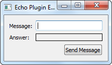

Echo Plugin Example
This example shows how to create a Qt plugin.

There are two kinds of plugins in Qt: plugins that extend Qt itself and plugins that extend applications written in Qt. In this example, we show the procedure of implementing plugins that extend applications. When you create a plugin you declare an interface, which is a class with only pure virtual functions. This interface is inherited by the class that implements the plugin. The class is stored in a shared library and can therefore be loaded by applications at run-time. When loaded, the plugin is dynamically cast to the interface using Qt's meta-object system. The plugin overview document gives a high-level introduction to plugins.
We have implemented a plugin, the EchoPlugin, which implements the EchoInterface. The interface consists of echo(), which takes a QString as argument. The EchoPlugin returns the string unaltered (i.e., it works as the familiar echo command found in both Unix and Windows).
We test the plugin in EchoWindow: when you push the QPushButton (as seen in the image above), the application sends the text in the QLineEdit to the plugin, which echoes it back to the application. The answer from the plugin is displayed in the QLabel.
EchoWindow Class Definition
The EchoWindow class lets us test the EchoPlugin through a GUI.
class EchoWindow : public QWidget { Q_OBJECT public: EchoWindow(); private slots: void sendEcho(); private: void createGUI(); bool loadPlugin(); EchoInterface *echoInterface; QLineEdit *lineEdit; QLabel *label; QPushButton *button; QGridLayout *layout; };
We load the plugin in loadPlugin() and cast it to EchoInterface. When the user clicks the button we take the text in lineEdit and call the interface's echo() with it.
EchoWindow Class Implementation
We start with a look at the constructor:
EchoWindow::EchoWindow() { createGUI(); setLayout(layout); setWindowTitle("Echo Plugin Example"); if (!loadPlugin()) { QMessageBox::information(this, "Error", "Could not load the plugin"); lineEdit->setEnabled(false); button->setEnabled(false); } }
We create the widgets and set a title for the window. We then load the plugin. loadPlugin() returns false if the plugin could not be loaded, in which case we disable the widgets. If you wish a more detailed error message, you can use errorString(); we will look more closely at QPluginLoader later.
Here is the implementation of sendEcho():
void EchoWindow::sendEcho() { QString text = echoInterface->echo(lineEdit->text()); label->setText(text); }
This slot is called when the user pushes button or presses enter in lineEdit. We call echo() of the echo interface. In our example this is the EchoPlugin, but it could be any plugin that inherit the EchoInterface. We take the QString returned from echo() and display it in the label.
Here is the implementation of createGUI():
void EchoWindow::createGUI() { lineEdit = new QLineEdit; label = new QLabel; label->setFrameStyle(QFrame::Box | QFrame::Plain); button = new QPushButton(tr("Send Message")); connect(lineEdit, &QLineEdit::editingFinished, this, &EchoWindow::sendEcho); connect(button, &QPushButton::clicked, this, &EchoWindow::sendEcho); layout = new QGridLayout; layout->addWidget(new QLabel(tr("Message:")), 0, 0); layout->addWidget(lineEdit, 0, 1); layout->addWidget(new QLabel(tr("Answer:")), 1, 0); layout->addWidget(label, 1, 1); layout->addWidget(button, 2, 1, Qt::AlignRight); layout->setSizeConstraint(QLayout::SetFixedSize); }
We create the widgets and lay them out in a grid layout. We connect the label and line edit to our sendEcho() slot.
Here is the loadPlugin() function:
bool EchoWindow::loadPlugin() { QDir pluginsDir(QCoreApplication::applicationDirPath()); #if defined(Q_OS_WIN) if (pluginsDir.dirName().toLower() == "debug" || pluginsDir.dirName().toLower() == "release") pluginsDir.cdUp(); #elif defined(Q_OS_MAC) if (pluginsDir.dirName() == "MacOS") { pluginsDir.cdUp(); pluginsDir.cdUp(); pluginsDir.cdUp(); } #endif pluginsDir.cd("plugins"); const QStringList entries = pluginsDir.entryList(QDir::Files); for (const QString &fileName : entries) { QPluginLoader pluginLoader(pluginsDir.absoluteFilePath(fileName)); QObject *plugin = pluginLoader.instance(); if (plugin) { echoInterface = qobject_cast<EchoInterface *>(plugin); if (echoInterface) return true; pluginLoader.unload(); } } return false; }
Access to plugins at run-time is provided by QPluginLoader. You supply it with the filename of the shared library the plugin is stored in and call instance(), which loads and returns the root component of the plugin (i.e., it resolves the type of the plugin and creates a QObject instance of it). If the plugin was not successfully loaded, it will be null, so we return false. If it was loaded correctly, we can cast the plugin to our EchoInterface and return true. In the case that the plugin loaded does not implement the EchoInterface, instance() will return null, but this cannot happen in our example. Notice that the location of the plugin is not the same for all platforms.
EchoInterface Class Definition
The EchoInterface defines the functions that the plugin will provide. An interface is a class that only consists of pure virtual functions. If non virtual functions were present in the class you would get misleading compile errors in the moc files.
class EchoInterface { public: virtual ~EchoInterface() = default; virtual QString echo(const QString &message) = 0; }; #define EchoInterface_iid "org.qt-project.Qt.Examples.EchoInterface" Q_DECLARE_INTERFACE(EchoInterface, EchoInterface_iid)
We declare echo(). In our EchoPlugin we use this method to return, or echo, message.
We use the Q_DECLARE_INTERFACE macro to let Qt's meta object system aware of the interface. We do this so that it will be possible to identify plugins that implements the interface at run-time. The second argument is a string that must identify the interface in a unique way.
EchoPlugin Class Definition
We inherit both QObject and EchoInterface to make this class a plugin. The Q_INTERFACES macro tells Qt which interfaces the class implements. In our case we only implement the EchoInterface. If a class implements more than one interface, they are given as a space separated list. The Q_PLUGIN_METADATA macro is included next to the Q_OBJECT macro. It contains the plugins IID and a filename pointing to a json file containing the metadata for the plugin. The json file is compiled into the plugin and does not need to be installed.
class EchoPlugin : public QObject, EchoInterface { Q_OBJECT Q_PLUGIN_METADATA(IID "org.qt-project.Qt.Examples.EchoInterface" FILE "echoplugin.json") Q_INTERFACES(EchoInterface) public: QString echo(const QString &message) override; };
EchoPlugin Class Implementation
Here is the implementation of echo():
QString EchoPlugin::echo(const QString &message) { return message; }
We simply return the functions parameter.
The main() function
int main(int argv, char *args[]) { QApplication app(argv, args); EchoWindow window; window.show(); return app.exec(); }
We create an EchoWindow and display it as a top-level window.
The Profiles
When creating plugins the profiles need to be adjusted. We show here what changes need to be done.
The profile in the echoplugin directory uses the subdirs template and simply includes includes to directories in which the echo window and echo plugin lives:
TEMPLATE = subdirs
SUBDIRS = echowindow \
plugin
The profile for the echo window does not need any plugin specific settings. We move on to the plugin profile:
TEMPLATE = lib CONFIG += plugin QT += widgets INCLUDEPATH += ../echowindow HEADERS = echoplugin.h SOURCES = echoplugin.cpp TARGET = $$qtLibraryTarget(echoplugin) DESTDIR = ../plugins
We need to set the TEMPLATE as we now want to make a library instead of an executable. We also need to tell qmake that we are creating a plugin. The EchoInterface that the plugin implements lives in the echowindow directory, so we need to add that directory to the include path. We set the TARGET of the project, which is the name of the library file in which the plugin will be stored; qmake appends the appropriate file extension depending on the platform. By convention the target should have the same name as the plugin (set with Q_EXPORT_PLUGIN2)
Further Reading and Examples
The Defining Plugins page presents an overview of the macros needed to create plugins.
We give an example of a plugin that extends Qt in the style plugin example.